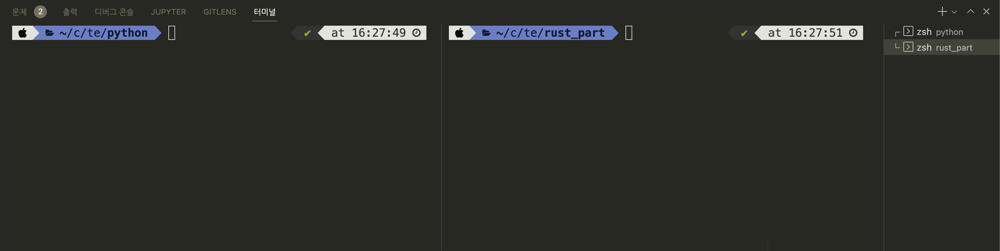

값 출력하기
파이썬에서는 모든 객체를 print 함수로 출력할 수 있습니다. 문자열 "Hello, world!" 를 출력하는 예제는 다음과 같습니다.
print("Hello, world!")
반면 러스트에서는 print 같은 편리한 함수 대신, 매크로(macro)를 사용해 값을 출력합니다. 매크로란 사전 정의된 편리한 기능을 의미하고, 항상 이름 뒤에 !가 붙습니다. 매크로에 대해서는 뒤에서 다시 자세히 설명하겠습니다. 러스트 코드는 매 줄의 마지막에 세미콜론(;) 이 붙습니다. 세미콜론이 없으면 컴파일 에러가 발생하니 주의하세요. 위의 파이썬 예제와 동일하게 문자열 "Hello, world!" 를 출력하는 코드는 다음과 같습니다.
fn main() { println!("Hello, world!"); }
변수 선언
변수란 메모리에 값을 저장하기 위해 사용되는 개념입니다. 변수의 이름을 통해 메모리에 저장된 값을 참조해서 사용할 수 있습니다. 파이썬은 변수 선언 시 타입을 명시하지 않아도 되기 때문에 실수값과 정수값 모두 변수에 바로 할당이 가능합니다. 파이썬에서 변수 x 와 y 를 선언하고 실수 1.0과 정수 10을 할당한 다음, f-string을 사용해 두 변수의 값을 출력합니다. main.py 에 다음 내용을 입력합니다.
x = 1.0
y = 10
print(f"x = {x}, y = {y}")
파이썬 코드 실행 결과는 다음과 같습니다. 폴더를 하위 폴더인 "python"으로 이동한 다음 코드를 실행해야 합니다.
/code/temp/python $ python main.py
x = 1.0, y = 10
러스트에서는 let 키워드를 사용해 변수를 선언합니다. 그리고 타입을 : 뒤에 명시합니다.
변수명 타입 값
let x: i32 = 10;대부분의 경우에서는 컴파일러가 타입을 추측해주지만, 몇몇 경우에는 직접 타입을 명시해줘야 하기도 합니다. 아래 예제에서는 실수 1.0을 f64 타입으로 선언했지만, 실제로는 변수 y와 같이 명시적으로 타입을 적어주지 않아도 컴파일이 됩니다. 다음으로 prinln! 매크로에서는 문자열의 {} 자리에 변수가 순서대로 들어가 전체 문자열이 완성됩니다.
fn main() { let x: f64 = 1.0; let y = 10; println!("x = {}, y = {}", x, y); }
하위 폴더인 "rust_part" 폴더로 이동한 다음, cargo run 을 실행해 결과를 확인해보겠습니다.
/code/temp/rust_part $ cargo run
x = 1, y = 10
파이썬과 러스트 모두 같은 결과가 나오는 것을 알 수 있습니다.
앞으로 파이썬 코드와 러스트 코드를 동시에 실행해야 하기 때문에, VSCode 터미널의 분할(split) 기능을 사용하면 편리합니다. 터미널을 연 다음, 우측 상단의 "터미널 분할"을 클릭합니다.
그리고 분할된 화면에서 하나는 파이썬 프로젝트를, 나머지는 러스트 프로젝트로 이동해 두면 편리하게 코드를 실행할 수 있습니다.

작명 규칙
파이썬과 러스트의 작명 규칙은 정말 비슷합니다. 대표적인 몇 가지 경우를 살펴보면 다음과 같습니다.
| 파이썬 | 러스트 | |
|---|---|---|
| 변수 | snake_case = 3 | let snake_case = 3; |
| 함수 | def my_function | fn my_function |
| 클래스/구조체 | class MyClass | struct MyStruct |
| 상수 | SCREAMING_SNAKE_CASE = 1 | const SCREAMING_SNAKE_CASE: i32 = 1; |
- 변수와 함수의 경우, 둘 다 스네이크 케이스(Snake case)를 사용합니다. 스네이크 케이스란, 모든 단어를 숫자 또는 알파벳 소문자로 작성하고, 단어 구분은 언더바(_)로 합니다. 단 변수명은 반드시 알파벳 소문자로만 시작해야 합니다.
- 파이썬의 클래스와 러스트 구조체는 파스칼 케이스(Pascal case)를 사용합니다. 파스칼 케이스는 대문자로 단어를 시작하고, 단어 구분을 대문자로 하는 작명법입니다.
- 상수의 경우는 둘 다 스크리밍 스네이크 케이스(Screaming snake case)를 사용합니다. 모든 알파벳이 대문자이고, 단어 구분을 언더바로 합니다. 단, 러스트의 상수는 반드시 타입을 명시해야 합니다.